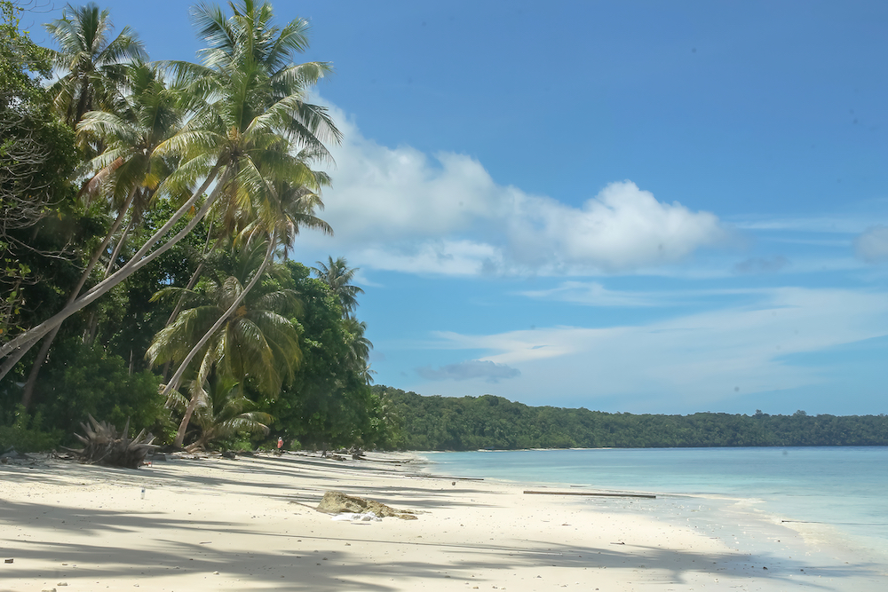

Bagian1 ||
Bagian2 ||
Bagian3 ||
Bagian4 ||
Bagian5 ||
Sudahkah anda memiliki rencana berlibur di tahun 2023 atau bahkan dalam waktu dekat ini?
Berlibur di masa pandemi memang bukanlah aktivitas yang mudah. Perlunya menerapkan
protokol kesehatan dan selalu menjaga kondisi tetap prima adalah hal yang harus dipersiapkan.
Berbagai upaya terus dilakukan pemerintah agar sektor pariwisata Indonesia tumbuh bangkit.
|
| Daftar Isi
Rekomendasi tempat wisata di Indonesia
1. Bali
2. Taman Nasional Komodo
3. Taman Nasional Bunaken
4. Raja Ampat
5. Derawan
|
ini rekomendasi tempat wisata di Indonesia:
Bagian 1
1.bali
Tempat wisata di Indonesia yang mendunia yang pertama tidak lain adalah Bali. Sudah ratusan
penghargaan yang didapatkan Bali sebagai destinasi wisata terbaik dan favorit dan favorit dari kancah
internasional. Baru-Baru ini, Bali masuk kedalam Top 4 Travelers' Choice Awards 2022 Most
Popular Destinations dari Tripadvisor
 |
| click gambar di atas untuk membuka |
Source Gambar
kembali ke atas
Bagian 2
2.Taman Nasional Komodo
Tempat wisata di Indonesia selanjutnya adalah Taman Nasional Komodo. Sesuai dengan
namanya, pulau ini merupakan habitat kadal purba raksasa Komodo yang hanya bisa ditemukan
di Indonesia. Pulau Komodo terdiri dari tiga pulau utama yaitu Pulau Komodo, Pulau Rinca, dan
Pulau Padar.
 |
| click gambar di atas untuk membuka |
Source Gambar
kembali ke atas
Bagian 3
3.Taman Nasional Bunaken
Tempat wisata di Indonesia yang satu ini menyajikan keindahan biota lautnya yang sungguh
menakjubkan. Yap. Taman Nasional Bunaken yang terletak di provinsi Sulawesi Utara. sama
seperti Bali, Taman Nasional Bunaken sudah lama menjadi primadona wisata Indonesia.
Diresmikan sejak tahun 1991, Kawasan Taman Nasional Bunaken memiliki luas mencapai 89.065 hektare
 |
| click gambar di atas untuk membuka |
Source Gambar
kembali ke atas
Bagian 4
4.Raja Ampat
Selain Bunaken, tempat wisata di Indonesia yang memiliki keanekaragaman biota laut yang menakjubkan
yaitu Raja Ampat, yang terletak di Provinsi Papua Barat. Raja Ampat merupakan salah satu Kawasan 10
Bali Baru yang dicanangkan pemerintah Indonesia sejak tahun 2015. Tujuan didirikan 10 Bali Baru tidak
lain untuk memeratakan potensi wisata yang ada di Indonesia yang tidak hanya berpusat di Bali saja.
 |
| click gambar di atas untuk membuka |
Source Gambar
kembali ke atas
Bagian 5
5.Derawan
Berbicara mengenai pantai dan keanekaragaman dunia bawah laut, Indonesia memang tidak ada
habisnya. Tempat wisata di Indonesia kali ini letaknya di ujung utara Indonesia tepatnya di Kabupaten
Berau, provinsi Kalimantan Timur. Destinasi wisata tersebut bernama Kepulauan Derawan. Daya tarik
utama Kepulauan Derawan ini tentunya sajian pantai pasir putih yang luas dan taman bawah lautnya.
Terdapat empat pulau utama dari gugusan pulau Derawan yaitu Pulau Maratua, Pulau Derawan, Pulau Sangalaki, dan Pulau Kakaban.
|  |
| click gambar di atas untuk membuka |
Source Gambar
kembali ke atas
Untuk lebih lengkapnya, silahkan buka:
About us
Untuk Keperluan Silahkan Kirim ke Email Berikut